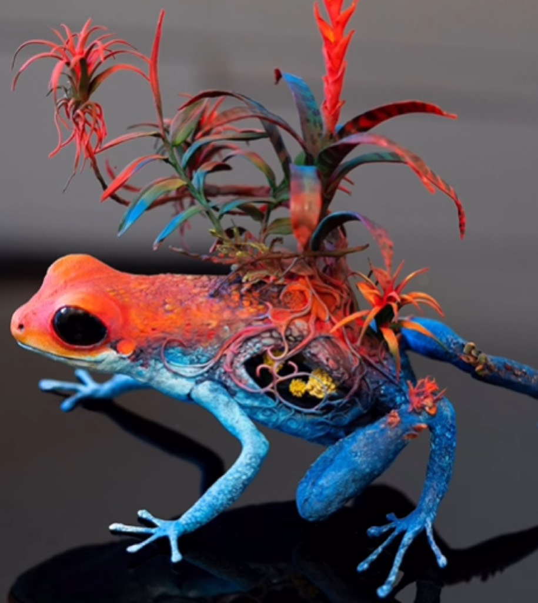

Elly Smallwood stands as one of Canada's most compelling contemporary painters, whose introspective and deeply humanistic approach to portraiture has redefined how we understand the intersection of psychology, identity, and artistic representation in the twenty-first century. Born in 1986 in Toronto, Ontario, Smallwood emerged from a generation of Canadian artists grappling with postmodern sensibilities while simultaneously seeking authentic human connection through visual expression. Her trajectory from art student to internationally recognized painter represents not merely a career progression, but rather a philosophical evolution that challenges viewers to confront their own humanity through the medium of paint and canvas.
Smallwood's early life in Toronto during the 1990s provided a formative environment where cultural pluralism and urban anonymity coexisted in fascinating tension. Growing up in a multicultural city became foundational to her artistic consciousness, exposing her to diverse perspectives, faces, and narratives that would later become central to her work. She demonstrated artistic inclination from childhood, but it was not until her teenage years that painting became more than casual interest. During her high school years at Earl Haig Secondary School, Smallwood's art teachers recognized an unusual maturity in her approach to composition and color theory. Rather than pursuing photorealistic techniques popular among her peers, she gravitated toward expressive abstraction and psychological portraiture, influenced by the emotionally turbulent works of artists like Lucian Freud and the gestural abstraction of the Abstract Expressionists.
Smallwood pursued her formal artistic training at the University of Guelph, where she completed her Bachelor of Fine Arts degree with a focus on painting. The university's program, known for its rigorous technical training combined with conceptual rigor, proved instrumental in developing her distinctive voice. At Guelph, she studied under mentors who emphasized not merely technical proficiency but philosophical engagement with artistic purpose. She completed her undergraduate degree in 2008, during the immediate aftermath of the global financial crisis—a moment of cultural uncertainty that paradoxically provided rich material for introspective artistic practice. Following her undergraduate completion, Smallwood moved to Montreal to pursue graduate studies at Concordia University, one of Canada's most prestigious fine arts programs. Her MFA thesis work, completed in 2011, began exploring the psychological dimensions of portraiture, examining how facial features and painted surfaces could communicate emotional states beyond literal representation.
The period between 2011 and 2015 represented Smallwood's artistic consolidation phase, during which she developed the distinctive visual language that would characterize her mature practice. Working from a studio in Montreal's Griffintown neighborhood, she produced increasingly confident paintings that balanced psychological intensity with formal sophistication. These early professional years involved significant exhibitions in Canadian institutional contexts, including solo shows at artist-run centers and participation in group exhibitions at venues like Articule and Skol in Montreal. Her work began generating critical attention from prominent Canadian art critics and curators, though international recognition would not come until the late 2010s.
Smallwood's fascination with humanity—as articulated in her often-quoted statement about being "obsessed with faces"—stems from a fundamental belief that portraiture offers the most direct access to psychological truth and human vulnerability. Unlike contemporary artists who engage with portraiture through digital mediation or appropriation, Smallwood maintains an essentially humanistic commitment to direct observation and painted mark-making. Her subjects emerge from her immediate circle: friends, family members, studio assistants, and occasionally strangers encountered in daily life. She photographs her subjects extensively, conducting what amounts to visual interviews before beginning the painting process. This preliminary photographic investigation allows her to establish psychological rapport with her subject, understanding not merely their physical features but something of their interior world.
Her artistic technique represents a sophisticated synthesis of observational painting traditions with contemporary gesturalism. Smallwood works primarily with oil paint, the medium's slow drying time allowing for extensive revisions and layering. She typically builds her compositions through multiple underpaintings, establishing tonal structures and spatial relationships before addressing specific facial features. This methodological approach emphasizes process over predetermined outcome, acknowledging that painting emerges through material engagement rather than illustration of preexisting ideas. Her brushwork demonstrates remarkable range, from highly refined passages of facial rendering to gestural abstraction in background areas. This formal tension—between likeness and abstraction, specificity and generalization—creates psychological complexity that rewards sustained viewing.
The canvas sizes Smallwood employs vary considerably, from intimate head studies measuring approximately 40 by 50 centimeters to ambitious large-scale works exceeding two meters in height. This scale variation reflects her conviction that different paintings demand different visual presences. Larger works possess immersive quality, commanding the viewer's attention and establishing physical presence analogous to encountering an actual person. Smaller works invite intimate engagement, encouraging viewers to move closer and examine subtle modulations of color and surface. Throughout her practice, regardless of scale, Smallwood maintains rigorous attention to color harmony and tonal sophistication. Her palette emphasizes earthy tones, grays, and muted flesh colors that register as fundamentally honest, avoiding the saturated chromaticism that might feel decorative or dishonest.
Smallwood's distinctive approach to portraiture emerged partly as response to contemporary portrait painting's perceived crisis. Many early twenty-first century artists had largely abandoned portraiture as insufficiently conceptually rigorous, or alternatively had embraced photographic realism as the only credible approach. Smallwood positioned herself differently, arguing that painting offered unique epistemological possibilities. Paint's material presence and visual texture create distance from photographic likeness while simultaneously emphasizing human presence and emotional content. The painted surface itself becomes active participant in meaning-making, the artist's hand visible in every gesture, every revision, every color decision. This emphasis on process and material authenticity resonates with contemporary viewers increasingly skeptical of digital mediation and craving direct human connection.
Cultural context profoundly shaped Smallwood's artistic emergence. Her career developed during a period of significant Canadian artistic renaissance, particularly in Montreal and Toronto. This moment saw Canadian artists achieving international prominence through biennial participations, major gallery representation, and substantial criticism. Smallwood's work engaged with this zeitgeist while maintaining distinctive voice. Her focus on psychology and human vulnerability responded to broader cultural conversations about identity, mental health, and authentic selfhood in increasingly digitized culture. Social media's proliferation during her early career years created paradoxical condition: unprecedented visual connectivity alongside widespread anxiety about authentic representation and performative identity. Smallwood's paintings offered counternarrative, emphasizing slowness, attention, and genuine psychological engagement.

The evolution of Smallwood's practice demonstrates increasing formal sophistication and conceptual depth. Her earliest exhibited works from 2012-2014, shown primarily in Canadian artist-run spaces, displayed somewhat hesitant engagement with abstraction, with backgrounds and peripheral compositional areas somewhat tentatively handled. As her practice matured through the mid-2010s, she developed confidence in more radical formal choices, allowing gestural abstraction and expressive color to dominate significant canvas portions. Her painting "Untitled (Self-Portrait)" from 2015 exemplifies this evolved approach, featuring a meticulously rendered face emerging from intensely gestural abstract passages of purple, gray, and burgundy. This painting's formal audacity—the radical imbalance between rendered face and abstract field—demonstrates artistic maturity and willingness to risk formal incoherence in service of psychological authenticity.
Smallwood's practice became increasingly visible internationally through the late 2010s. Her participation in major group exhibitions, including significant presence at contemporary art biennials and fairs, expanded her audience beyond Canadian contexts. A 2017 residency at the Cite Internationale des Arts in Paris exposed her work to European audiences and critics. This European exposure proved generative, leading to gallery representation in Germany and the Netherlands. Major institutional recognition followed, including solo exhibitions at respected contemporary art museums across North America. Her 2019 solo exhibition at the Art Gallery of Ontario titled "Faces: Psychological Portraits" introduced her work to broad Canadian audiences, garnering significant critical acclaim and attendance. This exhibition subsequently traveled to regional museums, extending her visibility within Canadian contexts.
The discovery and pathway to Smallwood's prominent recognition reflects contemporary art world dynamics and the crucial role of institutional validation. Like most emerging artists, her early success depended on accumulating social and cultural capital through participation in increasingly prestigious exhibition contexts. Artist-run centers in Montreal and Toronto provided early platforms, with sympathetic curators recognizing her distinctive voice. Critical writing by respected Canadian art critics—particularly substantial review essays in publications like Canadian Art and Border Crossings—established intellectual framework for understanding her work. Gallery representation proved pivotal; her affiliation with prominent contemporary art galleries in Toronto and Montreal substantially increased visibility and commercial viability. By the early 2020s, Smallwood had achieved position of significant professional accomplishment within Canadian art contexts, with works in major public collections and substantial critical recognition.
Smallwood's impact extends beyond individual artistic production into broader discourse about portraiture, identity, and painting's continued relevance. Her consistent commitment to humanistic portraiture offers powerful counterargument to assertions that painting has become obsolete or that digital mediation represents inevitable artistic future. Her work demonstrates painting's unique capacity for psychological investigation and emotional communication. Younger artists have responded to her example, with observable uptick in portrait-based painting practices among emerging Canadian artists. Her teaching—she maintains teaching position at Ontario College of Art and Design—influences significant number of young artists directly. Thematically, her emphasis on authentic human connection and psychological specificity resonates powerfully with contemporary audiences increasingly concerned about alienation and disconnection.
The legacy Smallwood is establishing positions her within longer traditions of Canadian portraiture while simultaneously asserting distinctive contemporary voice. Her work connects to historical Canadian portrait traditions, particularly the psychologically acute portraiture of painters like Paul-Émile Borduas, while remaining thoroughly contemporary in formal approach and cultural engagement. Her commitment to painting at moment of broader medium uncertainty offers philosophical model for artistic practice grounded in conviction rather than market demand. As her career continues to develop and mature, Smallwood's influence on Canadian contemporary art appears likely to deepen, particularly as sustained museum acquisitions and critical attention establish her as among most significant Canadian painters of her generation. Her fascination with humanity—translated through rigorous formal investigation, psychological depth, and unwavering commitment to painted surface—positions her work as profoundly humanistic response to contemporary cultural conditions demanding attention to individual persons and authentic connection.